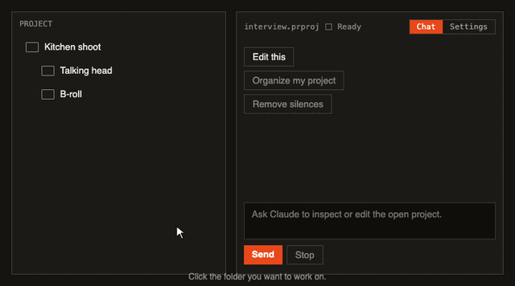

Claude, inside your timeline.
Click the folder you want to work on, then ask Claude to edit it.
Tip: keep b-roll in a separate folder from the talking head. It helps Claude a lot.
Safety
Transcription
Whisper runs on this Mac. Pick a model; it downloads once. Claude asks before downloading if it needs one.
Whisper: checking…